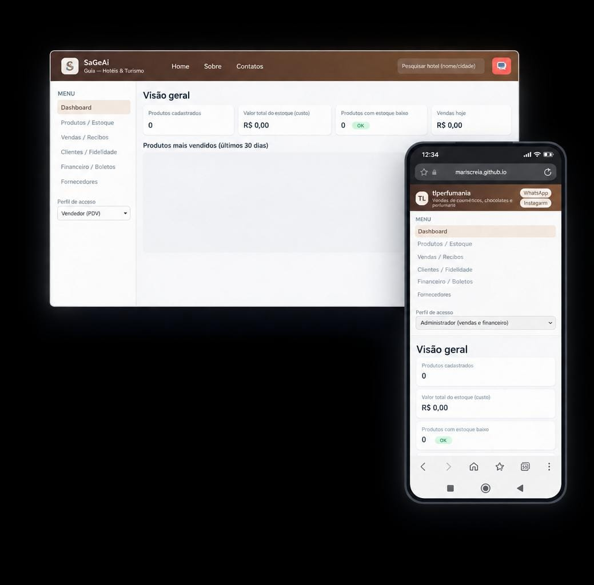

TL Perfumaria
Sistema de Gestão Web - HTML, CSS e JavaScript
A TL Perfumaria foi desenvolvida como projeto de finalização da bolsa de estudos da Softex, a partir da necessidade de uma empresa(TL Perfumaria) que buscava uma forma mais organizada de gerenciar seus dados. A proposta era facilitar o controle de clientes, fornecedores e produtos, além de tornar os processos de compra e venda mais simples e centralizados.
Processo
O projeto foi desenvolvido em grupo, durante a etapa de conclusão do curso. Partimos das necessidades apresentadas pela empresa e organizamos essas informações para definir as principais funcionalidades que o sistema deveria oferecer.
A aplicação foi estruturada em diferentes áreas de gerenciamento, incluindo dashboard, produtos e estoque, vendas, clientes, fornecedores e financeiro. A ideia era reunir essas operações em um único sistema, evitando que as informações ficassem espalhadas e tornando o acompanhamento do negócio mais prático.
No desenvolvimento, utilizei JavaScript para criar a lógica e as interações do sistema. Os dados cadastrados são armazenados no navegador, permitindo manter informações de produtos, clientes, fornecedores e movimentações durante o uso da aplicação.
Também foram trabalhadas regras para conectar diferentes partes do sistema. Ao realizar uma venda, por exemplo, o sistema verifica a disponibilidade do produto, calcula o valor da operação, registra a venda e atualiza o estoque. Essas informações também podem ser utilizadas pelo dashboard e pelo controle financeiro.
O projeto também conta com recursos como filtros de produtos, alertas de estoque baixo, diferentes perfis de acesso e geração de comprovante de venda. O resultado foi uma aplicação que transformou as necessidades apresentadas pela empresa em uma solução funcional de gestão.
Tecnologias
